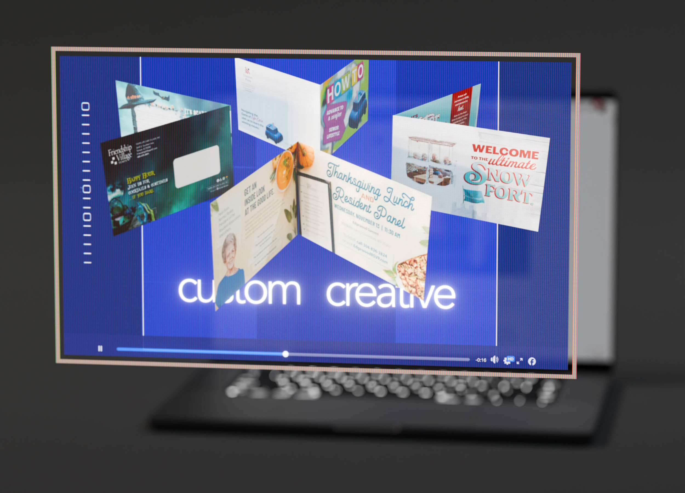
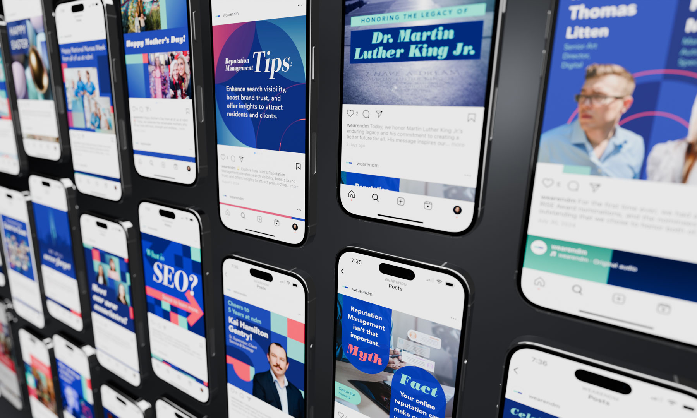

NDM Communications · Social Campaign · 2024
NDM Brand Identity Social Media Campaign 2024
Working alongside our in-house writer, I translated NDM’s messaging into a cohesive visual campaign spanning social content, motion design, 3D animation, and brand storytelling.
Campaign Ecosystem
One visual language across every touchpoint.
Working alongside our in-house writer, I developed a cohesive visual system spanning motion graphics, social media, digital advertising, email marketing, and branded collateral—ensuring every touchpoint felt unmistakably part of the same brand.


Social Media System
Consistency at scale.
Designed dozens of branded social assets that balanced educational content, thought leadership, recruiting, event promotion, company culture, and campaign messaging. Every post followed a flexible visual system that allowed content to evolve without sacrificing brand recognition.